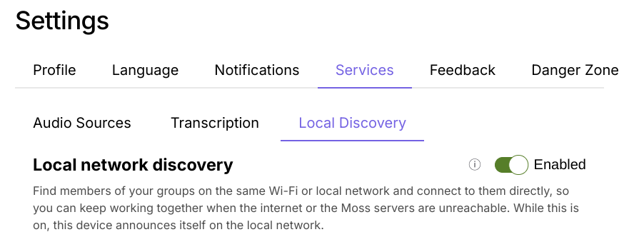
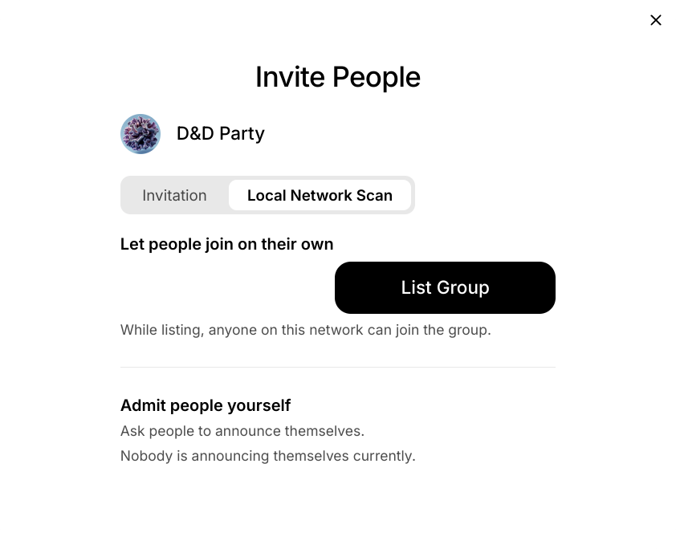
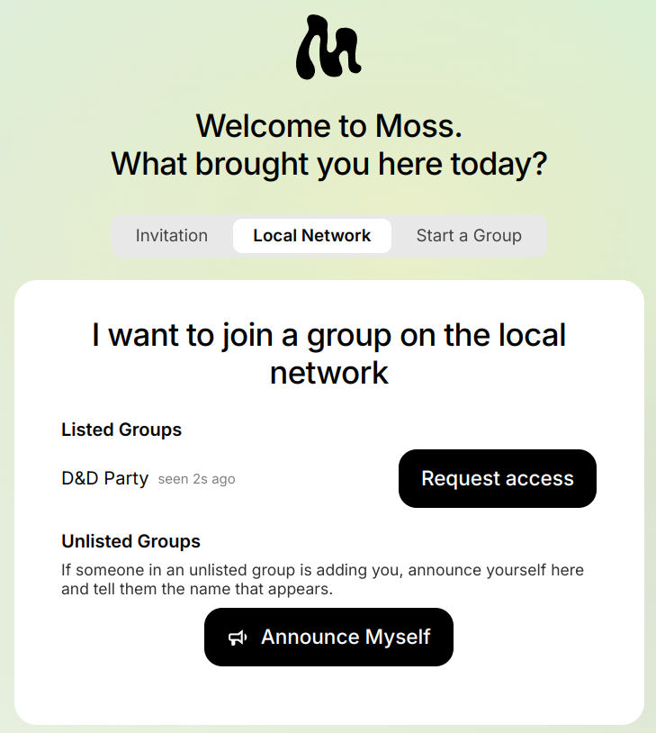

Moss, in the same room
Moss has always kept your group's stuff on your own computer. But a few everyday things still went through the internet: finding the other people in your group, getting a new person into the group, and getting the tools the group uses. So if you and your group were sitting around the same table and the internet went away, Moss couldn't do much for you.
Over the past month we've worked on all three. They're in Moss 0.16.0-dev.8, and together they mean a group of people on the same Wi-Fi can do all of that with no internet at all.
Finding each other without a server
Normally Moss finds the other members of a group through a bootstrap server, which is a meeting point on the internet, and connects to them through a relay server. That works well until the internet or those servers are down. Then two people at the same table can't see each other, even though their laptops are a meter apart.
Local Discovery adds a second way. Devices on the same local network find each other directly, the same way printers and speakers show up on your network. When it's on, your group keeps working with no internet at all, as long as you're on the same network.
You turn it on under Settings → Services → Local Discovery. It's off by default. While it's on, other devices on the network can see that yours is running Moss. They can't see the names of your groups, because Moss announces each group by a fingerprint, not its name.

Handing someone the invite, in person
Getting someone into a group used to mean copying an invite link and then working out how to get it to them: email, a chat app, a message to someone sitting right next to you. Often the two of you don't share any channel yet, and that's the whole reason you're setting this up.
Now Moss can hand the invite over the local network, in one of two ways. Both start from the Local Network Scan tab in Invite People.
- List the group. Click List Group, and anyone on the network can find it on the Local Network tab of Moss's welcome screen (or in Join Group) and click Request access to join. This is for a room where everyone is welcome.
- Admit people yourself. The newcomer clicks Announce Myself, and Moss gives them a name like "Purple Monkey Fern", which they say out loud. You find that name in your Invite People dialog and click Add to Group. The group never shows up for anyone else.


Either way, the invite is sealed so that only the person joining can open it. Anyone else on the network doesn't learn it.
This is useful even when the internet works fine. Friends around a kitchen table, a session at a conference, a local meet-up: in all of these the people are in the same room, and the room is what you trust. You can see who you're inviting, and they can see whose group they're joining. Nobody has to swap email addresses first. Some guest and café Wi-Fi networks stop devices from seeing each other, so it won't work everywhere. The old copy-and-paste link is still there for those.
Getting tools from each other
Moss tools come from the tool library, which Moss downloads from the internet. When you join a group and open one of its tools for the first time, Moss fetches it from there.
Now, when Moss can't reach the tool library, it asks the other members of your group instead. If someone who is online already has the tool, Moss copies it from their computer and shows you how far along it is. So on a local network with no internet, a newcomer can still install every tool the group uses, straight from the people around them.
It works on your own computer too. If you make a new group while offline, Moss offers the tools you already have from your other groups, marked so you can tell where they came from.
Try it
Put the three together and a room full of people with no internet can open Moss, find each other, bring in someone new, and set up the tools they need. That's closer to what local-first should mean. If you try it at a meet-up, on a train, or at your kitchen table, we'd love to hear how it went.
For the adventurous: all of this is in Moss 0.16.0-dev.8. It's a dev release, meant for testing, so expect rough edges and don't rely on it for groups that matter to you yet. Everyone you want to try it with needs the same version.
For the technically curious
Feel free to skip this part.
-
Local Discovery lives in a new
bootstrap_mdnsmodule in our fork of kitsune2, the networking layer under Holochain, and Moss ships it in a Holochain 0.7 build. It announces each network space over mDNS by a fingerprint, not its name, and dials the peers it hears directly, alongside the usual bootstrap and relay servers. - The invite handover is Moss's own and runs outside Holochain, as a small UDP multicast beacon that stays on the local network. Each side makes a throwaway P-256 key pair, and the invite code is encrypted to the newcomer's key (ECDH, then HKDF, then AES-GCM) and sent to them directly.
- The announced name, e.g. "Purple Monkey Fern", is derived from the newcomer's key and never sent over the network, so sharing it person is how you check you're admitting the right person.
- Tool transfer uses the group's existing remote signals. The tool comes over in 4 MiB chunks, and the happ is checked byte for byte against the hash recorded in the group. For now the UI is only checked against the sending member's own file hashes, and we plan to tighten that.